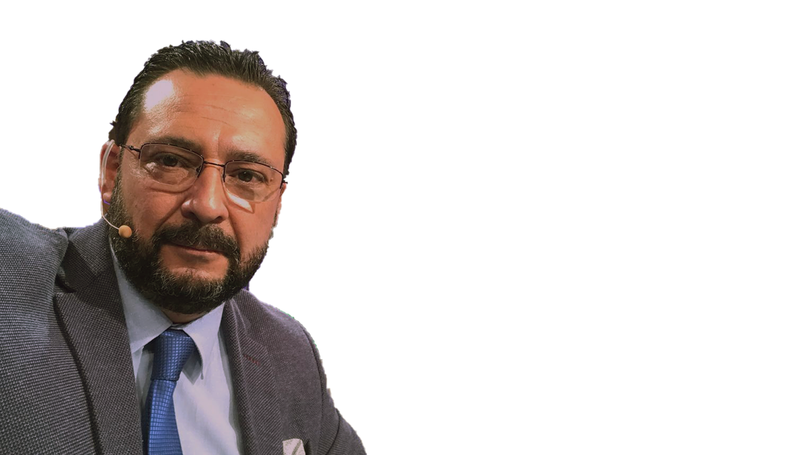
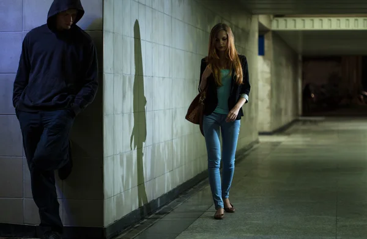

Donde las víctimas tienen voz, la verdad no prescribe y la justicia no descansa.
Episodios Publicados
Suscriptores
Casos Documentados
Años de Experiencia
En este canal damos la palabra a quienes han sufrido en silencio. Víctimas, familiares y testigos que buscan respuestas que la justicia oficial no les ha dado.
Analizamos cada caso con rigor, metodología policial y el compromiso con la verdad.

COMISARIO (R) · PDI DE CHILE
Con más de dos décadas al servicio de la Policía de Investigaciones, hoy pone su experiencia al servicio de la verdad y de quienes no han encontrado justicia.

Si has sido víctima o conoces un caso que necesita ser investigado, contáctanos. En El Comisario damos voz a quienes buscan justicia.
► CONTÁCTANOS